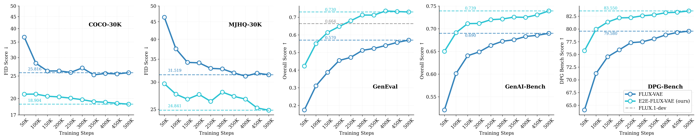
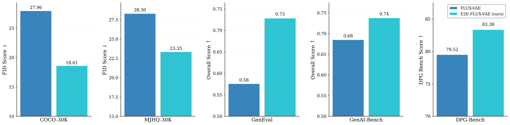

Family of end-to-end tuned VAEs for supercharging T2I diffusion transformers
We present REPA-E for T2I, a family of End-to-End Tuned VAEs for supercharging text-to-image generation training.
End-to-end VAEs show superior performance over FLUX-VAE across all benchmarks (COCO30k, DPG-Bench, GenAI-Bench, GenEval, MJHQ30k) without need for any additional representation alignment losses.
Better T2I Performance: Consistent improvements over FLUX-VAE across all benchmarks (COCO30k, DPG-Bench, GenAI-Bench, GenEval, MJHQ30k) with end-to-end tuned VAEs.
Family of End-to-End Tuned VAEs: We release a family of end-to-end tuned VAEs across different families (Flux, SD3.5, Qwen-VAE) for supercharging text-to-image generation training.
Better Latent Space Structure: End-to-end tuned VAEs show better latent space structure compared to traditional VAEs (FLUX-VAE) which are mostly optimized for reconstruction.
We present REPA-E for T2I, a family of End-to-End Tuned VAEs for supercharging text-to-image generation training.
End-to-end VAEs show superior performance across all benchmarks (COCO30k, DPG-Bench, GenAI-Bench, GenEval, MJHQ30k) without need for any additional representation alignment losses.
We evaluate End-to-End Tuned VAEs across multiple benchmarks and training scenarios, demonstrating consistent improvements over baseline VAEs.
Our end-to-end tuned VAEs show faster convergence and better final performance across all metrics.
Training Convergence at 100K Steps
Starting with 100K training steps on COCO30k, we observe that End-to-End Tuned VAEs achieve better performance across all evaluation benchmarks.
The improvements are particularly pronounced on vision-centric metrics like DPG-Bench and MJHQ30k.
Training convergence at 100K steps.
Comparison of FLUX-VAE baseline vs End-to-End Tuned VAEs across five benchmarks: COCO30k FID, DPG-Bench, GenAI-Bench, GenEval, and MJHQ30k.
End-to-end tuned VAEs show consistent improvements across all metrics.
Extended Training with Full Data (500K Steps)
Extending training to 500K steps with the full dataset, End-to-End Tuned VAEs continue to outperform baseline VAEs.
The performance gap remains consistent, demonstrating that the improvements are not limited to early training stages.

Training convergence with full dataset (500K steps).
Extended training confirms sustained improvements across all benchmarks with End-to-End Tuned VAEs.
High-Resolution Training (512px, 200K Steps)
When resuming training at higher resolution (512px) for 200K additional steps, End-to-End Tuned VAEs maintain their advantage.
This demonstrates that the benefits of end-to-end tuning persist across different training regimes and resolutions.

High-resolution training (512px, 200K steps).
Performance improvements persist when resuming training at higher resolution.
Qualitative Comparison
Beyond quantitative metrics, End-to-End Tuned VAEs produces visually superior results compared to baseline FLUX-VAE.
The generated images show improved detail, better prompt adherence, and more coherent compositions.
Below we show comparisons for T2I generations for models training with FLUX-VAE and E2E-Tuned FLUX-VAE (Ours).
Image 1 / 24
Qualitative comparison samples (500K steps, 512px resolution).
Models trained with End-to-End Tuned VAEs show improved quality across diverse prompts compared to FLUX-VAE.
Click images to zoom for detail inspection. Automatically cycles every 4 seconds.
Latent Space Analysis
To understand what makes End-to-End Tuned VAEs effective, we analyze the learned latent representations through PCA projections and spatial similarity analysis.
These visualizations reveal how end-to-end tuning shapes the VAE's latent space to better support high-quality generation.
PCA Projections of VAE Latents
We project VAE latent representations to 2D using PCA and visualize them as RGB images (first 3 principal components).
This reveals the spatial structure and semantic organization learned by different VAE architectures.
PCA projection visualization.
Comparison of latent space structure between baseline FLUX-VAE and E2E-Tuned Flux-VAE.
Colors represent the first 3 principal components, revealing spatial and semantic organization.
Spatial Self-Similarity Analysis
We compute cosine similarity between patch tokens in the latent space to measure spatial structure.
End-to-End Tuned VAEs show more coherent spatial patterns, indicating better capture of local and global image structure.
Finally, we show that the end-to-end tuned VAEs can also be used for traditional image generation benchmarks like ImageNet 256x256.
We observe that the end-to-end tuned VAEs achieve significantly better FID scores (better generation quality) compared to the traditional VAEs (FLUX-VAE), across all VAE families (Flux, Qwen, SD3.5).
ImageNet reconstruction quality (FID scores).
Comparison of Standard VAE vs E2E-tuned VAE across FLUX, Qwen, and SD3.5 architectures.
End-to-end tuned VAEs achieve significantly lower FID scores (6.1 vs 11.9 for FLUX, 5.2 vs 9.2 for Qwen, 5.2 vs 9.5 for SD3.5).
Conclusion
We present REPA-E for T2I, a family of End-to-End Tuned VAEs for supercharging text-to-image generation training.
End-to-end VAEs show superior performance over FLUX-VAE across all benchmarks (COCO30k, DPG-Bench, GenAI-Bench, GenEval, MJHQ30k) without need for any additional representation alignment losses.
We hope REPA-E for T2I will inspire further research into end-to-end training strategies for generative models and the co-design of
VAE architectures with diffusion transformers.
BibTeX
@article{leng2025repae,
title={{REPA-E: Unlocking VAE for End-to-End Tuning with Latent Diffusion Transformers}},
author={Leng, Xingjian and Singh, Jaskirat and Hou, Yunzhong and Xing, Zhenchang and Xie, Saining and Zheng, Liang},
journal={arXiv preprint arXiv:2504.10483},
year={2025}
}